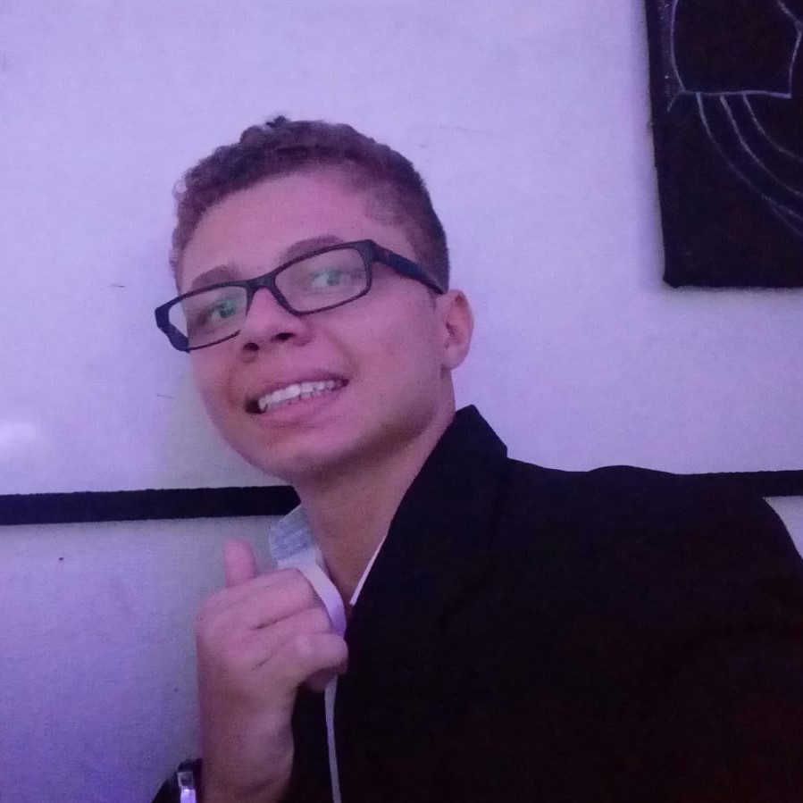

Luiz Guilherme Lima Costa
Brasileiro - Solteiro - 19 anos
Rua Dr.Pedro Augusto 229 - Dom Lustosa, Fortaleza(CE)
(85) 9 8954-6185/guilhermecostakl@gmail.com
- Objetivo
Adquirir primeira experiência na área de tecnologia
- Formação
- Ensino Médio - Fernão Dias - 2018 a 2020
- Experiências Profissionais
- Aline Fraldas - (Atualmente)
Cargo: Designer
Principais Atribuições: Criação de Artes para Venda dos Produtos
- Canal Josiane Brito - (Atualmente)
Cargos: Editor de videos e Desgner
Principais Atribuições: Editar os Vídeos do Canal e Criar a Thumbnails
- Cursos
- Logica de Programação - SENAI - 14 horas - Janeiro de 2020
- Fundamentos do Design Gráfico - Fundação Bradesco - 6 horas - Outubro de 2020
- Crie Fácil Seu Site - Juventude Digital - 12 horas - Outubro de 2021
- Python 3 (Mundo 1) - Curso em vídeo - 40 horas - Julho de 2021
- Python 3 (Mundo 2) - Curso em vídeo - 40 horas - Dezembro de 2021
- Idiomas